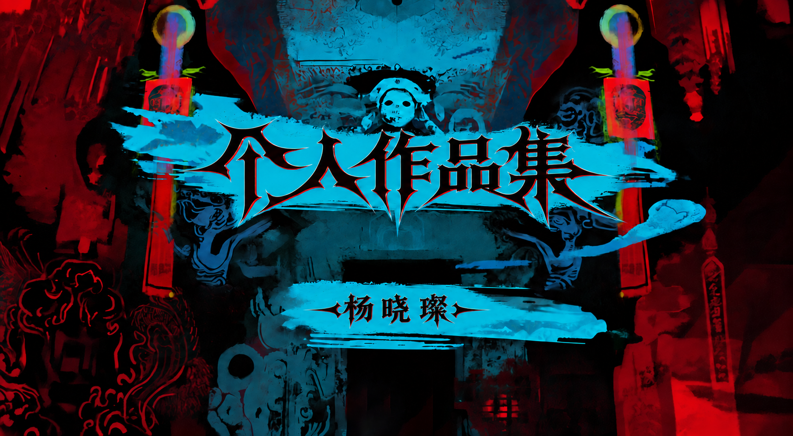
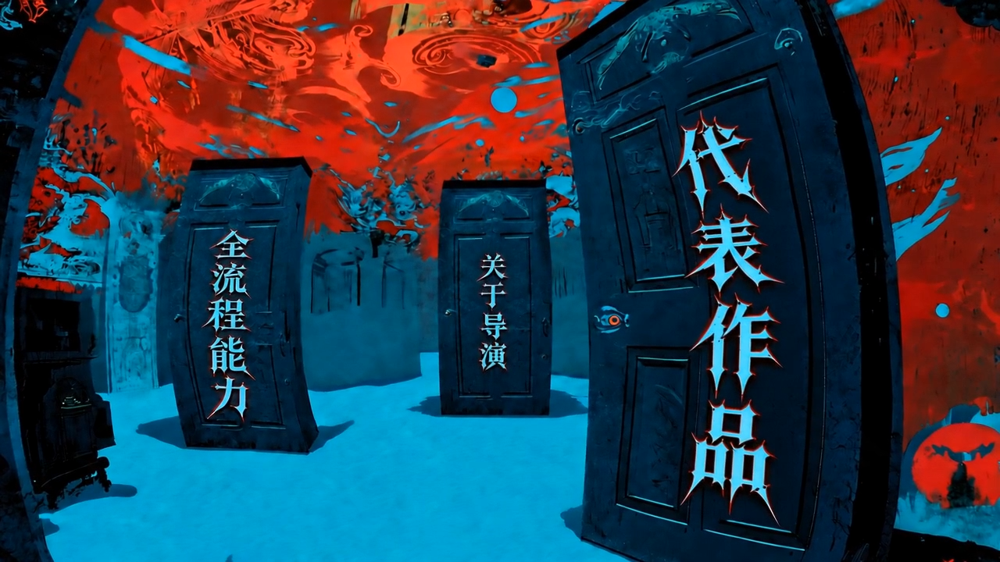
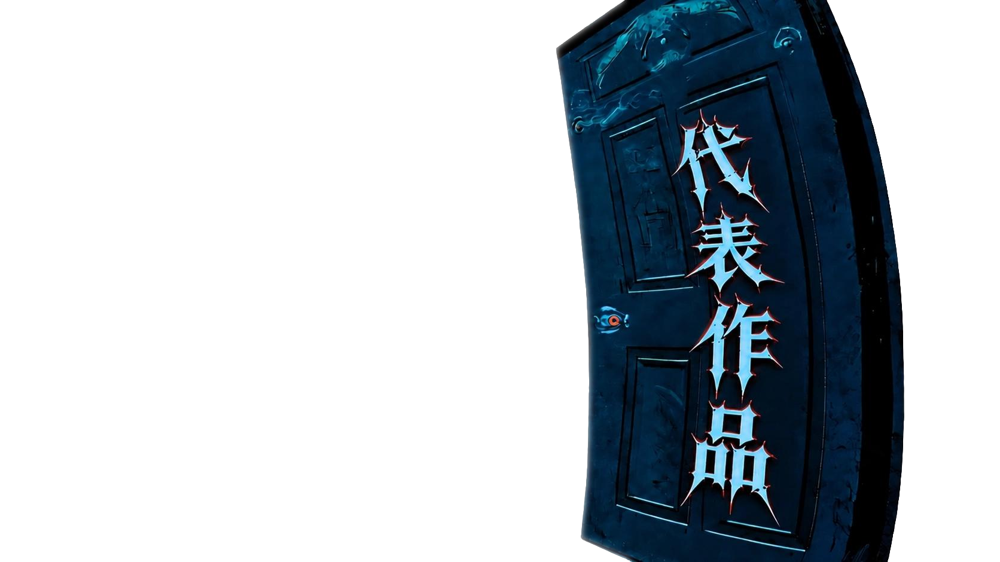
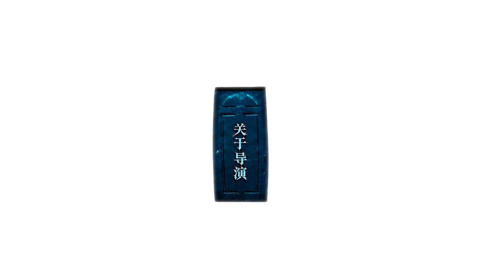
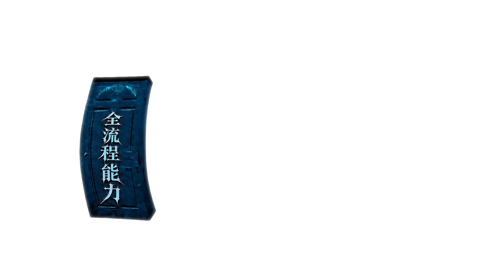
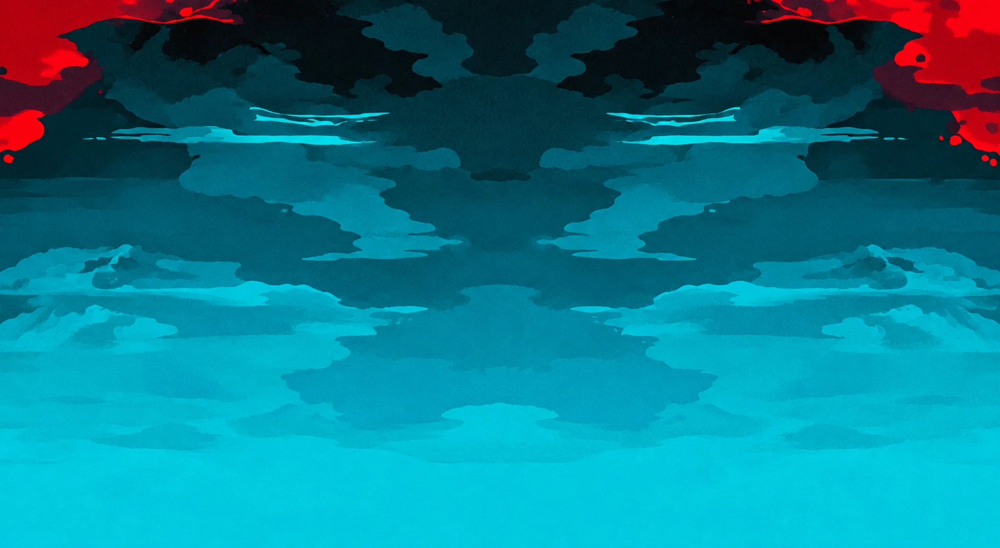
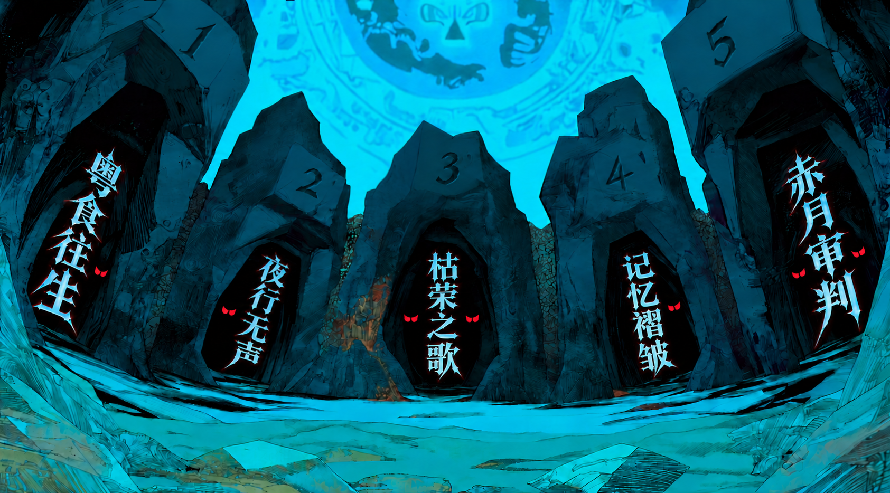
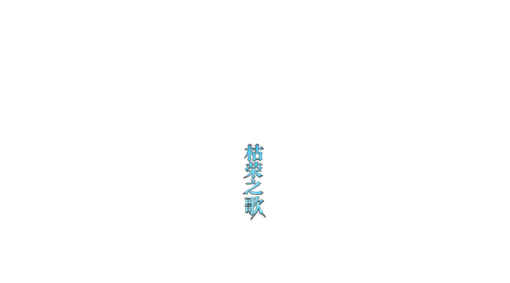
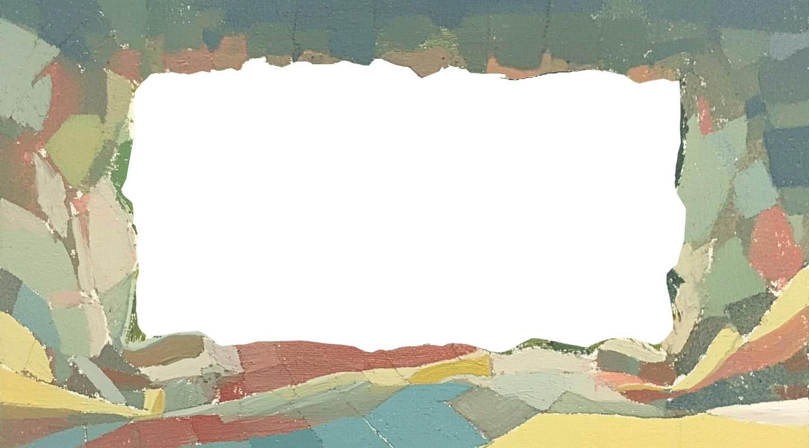
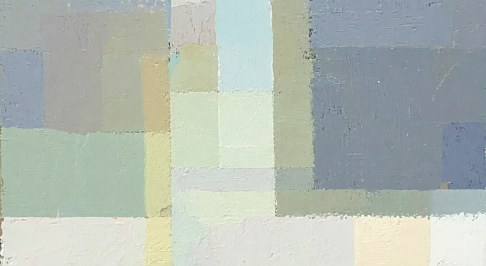

Just Desserts: Revenge & Merge
独立完成30段游戏剧情内容，包括4段活动CG与24段剧情CG，总时长约20分钟。负责台词脚本拆解、文字与画面分镜、镜头生成和剪辑交付，画面反馈最多两轮局部修改。
商业CG分镜统筹独立交付

浏览器已拦截自动播放，点击页面开启背景音乐




DIRECTOR · STORYBOARD · VISUAL NARRATIVE
以导演判断统筹剧本、分镜、表演、声音与最终交付
DIRECTOR PROFILE
中央美术学院动画专业 · 2027届
就读于中央美术学院动画专业，具备扎实的美术基础、审美判断与导演思维，能够从剧本出发完成剧情拆解、文字及画面分镜、镜头调度、角色表演设计、AI画面与视频生成、音乐音效及后期剪辑，具有独立完成视频全流程制作与交付的经验。尤其擅长AI视频的角色表演塑造和音乐情绪把控，重视用工具实现创意，而非停留在软件操作层面。能够与策划、编剧和主美准确沟通创作需求，根据反馈快速调整人物表现、镜头衔接与整体风格，兼顾创意表达和项目落地效率。喜欢的导演和作者有：今敏、宫崎骏、周星驰、詹姆斯·卡梅隆、丹尼·博伊尔、藤本树、荒木飞吕彦、MTJJ和谏山创，关注其在心理空间、情绪表达、喜剧节奏、镜头与音乐方面的创作方法。长期体验动作、RPG、策略、休闲经营及非对称竞技游戏：《塞尔达传说：旷野之息》《王国之泪》500小时以上（旷野之息探索度75%、王国之泪探索度85%）；《王者荣耀》6年以上（荣耀印记1、王者印记4）；《空洞骑士》150小时以上、地图探索98%；《朋友集结！梦想生活》150小时以上、岛主240级、拥有50名岛民；《代号鸢／如鸢》约1年、爵位80级；《第五人格》3年、求生五阶、监管四阶。丰富的影视观看和游戏体验使我能够从玩家视角分析不同品类的叙事节奏、角色塑造、地图引导与情绪反馈，并将这些理解转化为更符合游戏语境的分镜、角色PV与剧情CG表达。
PROJECT PROOF
点点互动 · 2026.08至今
独立完成30段游戏剧情内容，包括4段活动CG与24段剧情CG，总时长约20分钟。负责台词脚本拆解、文字与画面分镜、镜头生成和剪辑交付，画面反馈最多两轮局部修改。
数影豹驱 · 2026.02至2026.06
参与6部AI短剧，独立完成8集、总时长约32分钟；负责分镜、角色场景设计、动态素材与后期整合。《阴沟狂想曲》7分09秒内容上线DramaWave，并完成2节分镜与AI动画课程。
原创项目与协作实践
《世纪ai》获校级推荐并进入国家级与市级候选评审；《司妖司》完成第一季全流程创作。持续以原创作品验证剧本、分镜、视觉开发、音乐和剪辑的统一导演能力。
VISIBLE EVIDENCE
点击图片可查看大图。项目、展览、荣誉与行业交流共同构成导演实践的可追溯证明。

DIRECTING · STORYBOARD · PERFORMANCE · DELIVERY
AI是辅助工具，导演判断决定镜头为何存在


3D CHARACTER & PROP DESIGN

01 / 04

CREATIVE PROCESS · VISUAL REFERENCES
YUESHI · STORYBOARD TO KEYFRAME
运用了四种关键帧制作方法。
VIDEO PROMPT · 00—60S
重点：水陆转场、快节奏片、第一视角磁吸跟拍
电影级高速追踪镜头，一条鲜活的鲑鱼在清澈碧绿的海水中逆流而上，慢动作拍打着水面。镜头在空中无缝切换：鲑鱼落到专业的木质砧板上，变成新鲜的半片鱼柳。厨师的双手在快速移动中模糊移动，将鲑鱼切成晶莹剔透的刺身，摆成色彩缤纷的粤式“七彩捞鱼”。镜头瞬间切换到厨师的主观视角：他快速走着，手里拿着盘子，摄像机运用“磁性主体追踪”和动态构图重建技术，将盘子重重地摔在餐桌上。4K超高清，超写实，节奏感强烈的剪辑。
焦点：鱼眼镜头、漫画速度线、荒诞幽默转场
低角度固定鱼眼镜头向上拍摄一位年轻女孩。她用筷子夹起一片鲑鱼片。镜头猛烈地拉近，聚焦在生鱼片上。动作：在升降机的最高点，生鱼片像活物一样扭动，从筷子上滑落。镜头垂直下坠，跟随下落的鱼片，并添加风格化的漫画速度线，以增强速度感。鱼片落出画面，画面上方，一只肥硕的活鹅重重地摔在地上。它茫然地站起身，却被一只看不见的手猛地拽出画面右侧。
重点：横摇推进、上帝视角、盗梦空间式旋转
鹅被拉走的动作过渡到砧板上油光锃亮的烤粤式鹅。镜头从左至右缓慢摇摄，背景中出现一扇窗户。突然加速：镜头穿过窗户，朝着远处的海洋疾驰而去。俯视几何构图：镜头潜入水中，营造出雾气扩散效果。海底牡蛎的微距镜头。突然，葱、姜、蒜像流星一样从水面落下。在失重状态下，一切都剧烈震动。牡蛎肉从壳中弹出，飞入燃烧的炒锅。镜头锁定一只悬浮在空中的牡蛎，背景是深邃的散景。
重点：扭转、脑内穿梭、猎奇收尾
类似《盗梦空间》的轴向旋转：飞翔的牡蛎成为漩涡中心，背景旋转变形，最终变成女孩的后脑勺。镜头以广角鱼眼镜头穿过她的头骨，回到她手持鲑鱼的第一人称视角。鱼儿“啪嗒”一声掉在桌子上。一阵短暂的沉默（喜剧效果）。女孩停顿了一下，然后漫不经心地拿起另一片。镜头切换到真实角度：焦点转移到左下角，那里掉落的鲑鱼像蛆虫一样蠕动，爬下桌沿，溅起水花落入水中。4K，超现实主义，诡异氛围。
SHOT DESIGN · 20 SHOTS
按镜头时间浏览完整分镜；表格可左右滑动查看机位、光影与转场设计。
| 镜号 | 分镜画面 | 时间／时长 | 景别・机位・运镜 | 画面内容与位置关系 | 光影设计 | 轴线与转场 |
|---|---|---|---|---|---|---|
| 01 | 00:00.0—00:03.1 3.1秒 |
全景／侧面机位／静态展示 | 主角原是水池中一条自由游动的鱼，却因人类捕捞而失去自由。它不甘就此结束生命，这个倔强的灵魂因此获得了穿越重生的能力。 | 蓝绿色冷调为主，水面高光从上方切入；鱼身灰白受光，背景略暗以突出主体。 | 以鱼身的垂直方向为构图轴，水面横线稳定画面，并引出下一镜的案板空间。 | |
| 02 | 00:03.1—00:05.3 2.2秒 |
俯视特写／固定机位 | 案板上出现红色鱼肉与鱼头，食材横向铺开；刀具与手部尚未入画，强调处理前的静置状态。 | 案板暖黄与鱼肉红色形成强对比，周围灰蓝桌面压低饱和度。 | 由水域转入餐厨空间，横向鱼身承接上一镜的主体方向。 | |
| 03 | 00:05.3—00:07.4 2.1秒 |
俯视近景／手部操作／轻微推进 | 戴手套的双手持刀处理鱼肉，刀线沿鱼身切入；动作集中在画面中心偏右，形成制作过程中的第一处明确动作。 | 白色手套与银色刀面反光，鱼肉保持红橙主色，冷色桌面衬托操作区域。 | 刀具运动方向与鱼身一致，以切割动作的动势进入摆盘镜头。 | |
| 04 | 00:07.4—00:11.8 4.4秒 |
俯视大全景转餐桌近景／固定机位 | 主角被制成广式特色菜《捞鱼生》，由俯视摆盘过渡到餐桌上的成品展示。 | 盘面色彩明亮，红、绿、黄分区清晰，整体光线均匀偏暖。 | 圆盘成为构图中心，由切割的线性运动转为圆形摆盘，并衔接餐桌空间。 | |
| 05 | 00:11.8—00:13.4 1.6秒 |
中近景／正面机位／轻微推近 | 女孩坐在餐桌前夹起鱼片，面带微笑，主体位于画面中央；前景餐盘形成遮挡，突出即将进食的动作。 | 人物面部受柔和正面光，白衣与浅色背景保持清爽，食物红色成为视觉焦点。 | 视线与筷子方向共同指向食物，由摆盘中心自然转入人物中心。 | |
| 06 | 00:13.4—00:16.6 3.2秒 |
极近景转仰视／动作衔接 | 仍保有灵魂意识的主角拼命扭动身体逃脱，并在空中完成下一次穿越。 | 口腔与肤色形成暖亮区域，随后切入明亮蓝天，强化逃脱瞬间。 | 从口腔局部轴转向空中的上升动势，以鱼肉飞离画面承接下一镜。 | |
| 07 | 00:16.6—00:18.7 2.1秒 |
全景／平视／横向跟随 | 主角转生为乌鬃鹅，在鹅群前展翅活动。 | 户外蓝绿环境光明亮，鹅身受阳光勾边，地面暖色增强生活气息。 | 运动方向由左向右，以展翅动作延续上一镜的身体运动感。 | |
| 08 | 00:18.7—00:22.6 3.9秒 |
中景／低机位／静态凝视 | 主角再次被人抓住，并被当作食材带走。 | 白鹅受正面光照亮，背景蓝灰阴影压低，主体轮廓清晰。 | 正面凝视打破上一镜的横向运动，以鹅的中轴建立其即将被食用的对象感。 | |
| 09 | 00:22.6—00:25.3 2.7秒 |
近景／倾斜机位／缓慢旋转 | 主角被制成《广式烧鹅》，随后进入刀具处理的瞬间。 | 金橙高光集中在烧鹅表面，背景青蓝与灰色形成冷暖冲突。 | 从活体正面切到熟食斜向构图，再以刀具落下的动势衔接空镜。 | |
| 10 | 00:25.3—00:26.2 0.9秒 |
空镜／室内全景／固定机位 | 刀起刀落之间，主角的灵魂再次逃脱，并穿越大海。 | 室内以冷绿阴影为主，窗外蓝色高亮，形成安静的间奏。 | 空镜缓冲上一镜的强烈转化，以水平线稳定节奏。 | |
| 11 | 00:26.2—00:29.1 2.9秒 |
大远景／俯视／缓慢拉远 | 画面取景于广东汕头南澳岛的海上蚝田，广阔水面与养殖区铺展开来。 | 高调蓝白水面压低细节，橙褐色养殖排列成为重复的视觉符号。 | 养殖区排列形成透视线，由单一食材扩展为群体与海域意象。 | |
| 12 | 00:29.1—00:33.0 3.9秒 |
近景／俯视／连续摆放 | 主角的灵魂穿越到生蚝身上；成串生蚝进入画面，随后被双手取下并配入姜葱。 | 食材冷暖色交错，手部高光清晰，背景保持浅蓝灰。 | 双手从左右进入形成对称操作，串状竖线承接上一镜养殖区的排列。 | |
| 13 | 00:33.0—00:34.3 1.3秒 |
特写／俯视／固定机位 | 主角又被制成《姜葱炒生蚝》。 | 橙黄色火焰高饱和，贝壳白色强反光，黑色锅边形成强烈框景。 | 圆形锅具延续圆形构图，火焰向上的动势引出下一镜。 | |
| 14 | 00:34.3—00:37.4 3.1秒 |
极近景／俯视／旋转运动 | 主角的灵魂再次穿越，生蚝逐渐被卷入旋转的水流。 | 贝肉乳白高亮，外圈蓝灰与深褐旋转，形成中心聚光。 | 以贝壳为中心轴，旋转水流直接引出抽象旋涡镜头。 | |
| 15 | 00:37.4—00:39.5 2.1秒 |
抽象镜头／中心构图／快速旋转 | 画面转化为蓝黄相间的旋涡，现实中的食材形态被抽象为吞噬与循环的视觉符号。 | 深蓝与金黄对冲，中心黑蓝下沉，制造强烈的吸入感。 | 旋涡中心成为唯一轴点，以抽象转场连接餐桌场景。 | |
| 16 | 00:39.5—00:41.6 2.1秒 |
过肩俯视／轻微推近 | 主角终于穿越到开头的女孩身上。 | 桌面食物色彩丰富，人物头发的暗部压住前景，形成视线导向。 | 人物背部成为前景轴线，旋涡中心转化为桌面中心。 | |
| 17 | 00:41.6—00:45.2 3.6秒 |
餐桌近景／俯视／静态 | 主角成为起初自己认定的“罪魁祸首”。 | 多色菜盘形成高饱和拼贴，食物红色与桌布蓝色构成冷暖对比。 | 以筷子的夹取方向引导视线，群像食物承接上一镜的桌面空间。 | |
| 18 | 00:45.2—00:48.1 2.9秒 |
正面近景／轻微推近 | 主角获得了处置这些食物的权力。 | 面部亮度最高，眼睛反光突出，肉片红色贴近镜头形成压迫感。 | 人物正面轴明确，由餐桌群像收束到进食瞬间。 | |
| 19 | 00:48.1—00:55.5 7.4秒 |
俯视近景／固定机位 | 看着手中的鱼肉仿佛重新获得生命、从自己面前逃离，主角意识到，那或许正是尚未穿越时的自己。 | 蓝色桌面大面积铺开，橙色鱼肉孤立突出，整体光线转冷。 | 从人物正面切到桌面俯视，孤立的鱼肉成为新的视觉轴。 | |
| 20 | 00:55.5—01:04.4 8.9秒 |
俯视特写转片名／变焦与淡出 | 主角看着曾经的自己一步步蠕动逃离、投入轮回，最终获得往生；片名《粤食往生》显现，为故事收束。 | 蓝色桌面与水面旋涡交替闪动，随后转入黑底白字，明暗反差完成情绪落点。 | 鱼肉沿画面中轴向水面移动，变焦脉冲强化穿越感；旋涡与片名淡出构成最终闭环。 |
TOOLS · PRODUCTION
01 / 03
建议横屏观看